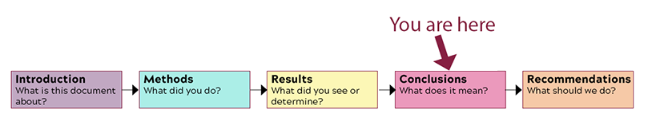

How to analyze your audience and purpose so that you can choose how to present information clearly and effectively. [CLO 1]
How to find and evaluate original, ethical evidence that supports your position through primary and secondary research. [CLO 2 & 3]
How to write documents you may encounter in the workplace (specifically front matter for a report). [CLO 4]
How to use colors, layout, and formatting that make your documents understandable and easy to read. [CLO6]
How to take advantage of design principles, including contrast, repetition, alignment, and proximity, to communicate your ideas effectively. [CLO 7]
What I Want You to Do

The Sections of the Body of the Recommendation Report
Based on the analysis of your website and your related research, write the Conclusions section of your Recommendation Report.
Why I Want You to Do It
The Results section is where you tell your readers about what you found when you conducted research. I am breaking the report out, section-by-section, to guide you through the process of writing the document and help make sure you include everything that is required for a complete report.
Where You Can Find Help
From Markel & Selber, Chapter 18:
The details on the Conclusions section, from p. 494:
“Conclusions answer the question ‘What does it mean?’ They are the implications of the results. To draw conclusions, you need to think carefully about your results, weighing whether they point clearly to a single meaning.”
Example Conclusions section, on pp. 523–524 (part of the sample recommendation report in Figure 18.8).
“Evaluating the Information,” on pp. 132–35 (in Chapter 6 of the textbook).
Suggested Due Date: By 11:59 PM on Friday, April 15, 2022.
Grace Period: The grace period for this activity ends at 11:59 PM on Friday, April 29, 2022.
How You Do It
Complete a draft of your Methods and Results sections before beginning this section, since this section focuses on the conclusions drawn from your research.
Open the word processor document where you are working on your recommendation report.
Scroll through to the location for your Conclusions section.
Tips for Writing Sub-Headings
Use the headings in the Conclusions section of the sample recommendation report in Figure 18.8 of the textbook as a model.
Consult the advice in the “Writing Clear, Informative Headings,” section on pp. 199–202 (in Chapter 9 of the textbook).
Make any changes necessary to the headings for the sub-sections of your Conclusions section:
Add a sub-heading in the Conclusions section for each of the sub-headings in the Methods and Results sections. Check the table of contents in
the sample recommendation report in Figure 18.8 of the textbook to see the relationship among these three sections.
Check that the phrasing of the sub-headings in the Conclusions sections repeats keywords and phrases so that a reader can easily tell what parts of the research support the Conclusions you draw.
Write the content for the Conclusions section:
Explain the implications of your research under each of the sub-headings.
Refer to the research results to support your implications.
Work back through the information you have added to make sure you have sentences and clear ideas.
Focus this section on your conclusions only. Save your recommendations for the Recommendations section.
Ensure that any information you quote from your primary or secondary research is enclosed in quotation marks. Examples might be something that someone says in a response to a survey or interview (both primary research) or something stated in an journal article or book (both secondary research).
Add Documentation and Citations anywhere that you include paraphrased information or quotations from outside sources.
Review the section and make any additions or changes, using the information from the textbook and LinkedIn Learning videos as needed. At this point, focus in particular in making sure that you have included everything that answers the question, “What did it [your methods and results] mean?”
Move on to the next part of your report that you want to work on.
How to Assess & Track Your Work
You track and grade your own work in this course. Be sure to complete the following tasks: